From Static Charge to Modern High Voltage and Transformers
من الشحنة الساكنة إلى التوتر العالي والمحولات الحديثة
High Voltage Engineering I | هندسة التوتر العالي 1
Lecturer: Dr.-Ing. Aouss Gabash | المحاضر: د. م. أوس غباش
Course: High Voltage Engineering I | هندسة التوتر العالي 1 — جامعة إدلب
PDF generated:01.11.2026 | تاريخ تنزيل/توليد النسخة:01.11.2026
Version note: This date identifies the downloaded lecture version for tracking future updates. | ملاحظة الإصدار: يحدد هذا التاريخ نسخة المحاضرة المنزلة لتسهيل متابعة التحديثات اللاحقة.
Recurring abbreviations: HV = high voltage; AC = alternating current; DC = direct current; RMS = root mean square (effective value); EMF = electromotive force (a voltage, not a mechanical force); SI = International System of Units; IEC = International Electrotechnical Commission. Unit prefixes: k = 10³, M = 10⁶, m = 10⁻³, µ = 10⁻⁶, n = 10⁻⁹ and p = 10⁻¹² when attached to a unit. A standalone letter may instead be a quantity symbol.
اختصارات متكررة: HV التوتر العالي؛ AC التيار المتناوب؛ DC التيار المستمر؛ RMS جذر متوسط المربع، أي القيمة الفعالة؛ EMF القوة المحركة الكهربائية، وهي توتر وليست قوة ميكانيكية؛ SI النظام الدولي للوحدات؛ IEC اللجنة الكهروتقنية الدولية. وعند اتصالها بوحدة، تعني البادئات k وM وm وµ وn وp عوامل 10³ و10⁶ و10⁻³ و10⁻⁶ و10⁻⁹ و10⁻¹² على الترتيب. أما الحرف المنفرد فقد يدل على كمية فيزيائية.
مفردات المقرر | Course Syllabus
Based on the supplied Idlib University syllabus. The list covers the full course; Part 1 below introduces the history and principles needed to begin the first topic.
وفق توصيف هندسة التوتر العالي (1) المرفق من جامعة إدلب. تجمع هذه القائمة محاور المقرر كاملة؛ الجزء الأول أدناه يقدم المدخل التاريخي والمبادئ اللازمة للبدء بالمحور الأول.
توليد التوترات العالية المتناوبة
التوليد بالمولدات ومحولات الاختبار؛ تصميم الأنظمة الاسمية وأنظمة الدارة القصيرة؛ سلوك محولات الاختبار من حيث توافقيات التوتر؛ الإنشاء والأشكال والتصميم والتطبيقات.
Generation of high AC voltages
Generators and test transformers; rated-operation and short-circuit test-system design; voltage harmonics; construction, configurations, design and applications.
توليد التوترات العالية المستمرة
مولدات التوتر العالي المستمر؛ آلات الشحن بالتأثير وآلات المكثفات ومولد الشحنة الكهروستاتيكي ذو الحزام والمولدات ذات الحزام الدوار؛ التقويم أحادي الطريق والتوصيل متعدد المراحل؛ اللاحمل والتحميل؛ التموج وهبوط التوتر؛ المحولة ذات القلب المعزول.
Generation of high DC voltages
DC generators; influence and capacitor machines, the belt-driven electrostatic generator and moving-belt generators; half-wave rectification and multistage circuits; no-load and loaded operation; ripple and voltage drop; the insulated-core transformer.
توليد التوترات العالية النبضية
أشكال التوترات العابرة وأسباب نشوئها؛ التوترات الزائدة الخارجية والداخلية؛ العاصفة الرعدية وكهرباء العواصف وقناة البرق وآثاره؛ مولدات النبضات وحيدة المرحلة ومتعددة المراحل وحساب داراتها.
Generation of high impulse voltages
Transient waveforms and their causes; external and internal overvoltages; thunderstorms, atmospheric electricity, the lightning channel and lightning effects; single-stage and multistage impulse generators and circuit calculations.
توليد التوتر العالي المتناوب بترددات عالية
طرائق توليد التوتر العالي المتناوب بترددات عالية.
Generation of high-frequency high AC voltages
Methods of generating high alternating voltages at high frequencies.
Direct measurement; electrostatic voltmeters and sphere gaps; transformers and voltage dividers; transformation ratio and series resistors; resistive and capacitive voltage dividers and their comparison.
قياس التوترات العالية المستمرة
المقياس المكروي ذو المقاومات التسلسلية؛ مقسم الجهد الأومي؛ طريقة الفولتمتر التوليدي.
Measurement of high DC voltages
Microammeters with series resistors; resistive voltage dividers; the generating-voltmeter method.
قياس التوتر العالي النبضي
دارة القياس الكاملة وخصائصها؛ مقسمات التوتر المستخدمة في القياس النبضي؛ المقسم الأومي والمقسم السعوي؛ الفجوات الكروية.
Measurement of high impulse voltages
The complete measuring circuit and its required characteristics; impulse voltage dividers; resistive and capacitive dividers; sphere gaps.
Learning outcomes | ماذا ستتعلم؟
After studying this part, you should be able to:
Connect high-voltage development to power transmission.
Calculate transmission current and conductor losses in a simplified model.
Distinguish operating voltage, test voltage and voltage waveforms.
Use the electromagnetic induction law and the transformer ratio.
Calculate capacitive test current and required reactive power.
بعد دراسة هذا الجزء تستطيع:
ربط تطور التوتر العالي بمشكلة نقل الطاقة.
حساب تيار النقل وضياعات الموصلات في نموذج مبسط.
التمييز بين توتر التشغيل وتوتر الاختبار وأشكال التوتر.
استخدام قانون الحث الكهرومغناطيسي ونسبة تحويل المحول.
حساب تيار جسم اختبار سعوي والاستطاعة الردية المطلوبة.
How to read symbols: Each new symbol below is explained with its unit and local meaning. Subscripts identify a quantity or condition; they are not multiplication. Parentheses in \(e(t)\) indicate a function of time. \(=\) means equal; \(\approx\) approximate; \(\propto\) proportional to; \(|q|\) magnitude/absolute value; \(\Delta K\) change in kinetic energy. The same letter can have different meanings in different sections; a new context is explained again. Unit [1] means dimensionless. Units are upright; quantity symbols are mathematical variables.
قراءة الرموز: يوضح كل رمز جديد أدناه بوحدته ومعناه في السياق. تميز الأدلة السفلية كمية أو حالة، ولا تعني الضرب. وتعني الأقواس في \(e(t)\) تابعا للزمن. تدل \(=\) على المساواة، و\(\approx\) على التقريب، و\(\propto\) على التناسب، و\(|q|\) على المقدار أو القيمة المطلقة، و\(\Delta K\) على تغير الطاقة الحركية. وقد يختلف معنى الحرف نفسه بين الأقسام، فيشرح مجددا عند تغير سياقه. تعني [1] أن الكمية بلا بعد. تكتب الوحدات بخط مستقيم، وتميز عن رموز المتغيرات.
Physical units and dimensional checks | الوحدات الفيزيائية والتحقق من تجانس المعادلات
Each displayed equation below is followed by its symbols, SI units and a unit-balance calculation. Square brackets \([\mathrm{x}]\) mean “the unit of \(x\)”; [1] means dimensionless. Convert numerical inputs to compatible units before substitution. Equal dimensions are necessary for a valid physical equation, but do not by themselves prove its numerical coefficient or physical assumptions.
\(N\) and n count turns or stages and are dimensionless. Ratios, \(\sqrt2\), \(\sqrt3\), \(2\pi\), 4.44 and the minus sign introduce no units. Angles are given in radians (rad), which are dimensionless in SI. Subscripts label quantities; they do not multiply them.
تلي كل معادلة معروضة أدناه قائمة رموزها ووحداتها الدولية، ثم حساب يثبت تساوي وحدات الطرفين. تعني \([\mathrm{x}]\) «وحدة الكمية \(x\)»، وتعني [1] أن الكمية بلا بعد. حول المعطيات العددية إلى وحدات متوافقة قبل التعويض. تجانس الوحدات شرط لازم لصحة العلاقة، لكنه لا يثبت وحده صحة معاملها العددي أو فرضياتها الفيزيائية.
يمثل \(N\) وn عدد اللفات أو المراحل، وهما بلا بعد. لا تضيف النسب والثوابت \(\sqrt2\) و\(\sqrt3\) و\(2\pi\) و4.44 وإشارة السالب أي وحدة. تقاس الزوايا بالراديان rad، وهو بلا بعد في النظام الدولي. الرموز السفلية تميز الكميات ولا تعني ضربها.
Flux, frequency, energy, force | الفيض والتردد والطاقة والقوة
\(W\), \(\mathrm{VA}\), \(\mathrm{var}\): same dimensions, different quantities
Active power \([\mathrm{W}]\), apparent power \([\mathrm{VA}]\), reactive power \([\mathrm{var}]\) | الاستطاعة الفعالة والظاهرية والردية؛ تساوي الأبعاد لا يجعلها كمية واحدة
Unit prefixes only; standalone m denotes metre, and standalone n may count stages | هذه بادئات عند اتصالها بوحدة؛ أما m منفردة فهي المتر، وقد يدل n منفردا على عدد المراحل
Avoid symbol confusion: italic \(W\) denotes energy in joules, while upright \(\mathrm{W}\) is the watt unit; \(C\) may denote capacitance, while upright \(\mathrm{C}\) is the coulomb unit. \(F\) may denote force, while upright \(\mathrm{F}\) is farad; \(N\) may count turns, while upright \(\mathrm{N}\) is newton. \(E_{\mathrm{rms}}\) is an EMF \([\mathrm{V}]\); \(\mathbf E\) is an electric field \([\frac{\mathrm{V}}{\mathrm{m}}]\).
تمييز الرمز عن الوحدة: قد يدل الرمز \(W\) على طاقة تقاس بالجول، بينما وحدة \(W\) هي الواط. وقد يدل \(C\) على السعة، بينما وحدة \(C\) هي الكولوم. وقد يدل \(F\) على القوة، بينما وحدة \(F\) هي الفاراد؛ وقد يدل \(N\) على عدد اللفات، بينما وحدة \(N\) هي النيوتن. كذلك \(E_{\mathrm{rms}}\) قوة محركة كهربائية \([\mathrm{V}]\)، أما \(\mathbf E\) فهو مجال كهربائي \([\frac{\mathrm{V}}{\mathrm{m}}]\).
Scientists in Birth Order | العلماء بحسب سنة الميلاد
Each person is introduced once, from the earliest birth to the latest. The year at the left is the birth year, not the invention date; the achievement date is stated inside each card. This is a selection of milestones directly connected to charge, high voltage, transformers and transmission.
يقدم كل عالم للمرة الأولى بحسب سنة ميلاده من الأقدم إلى الأحدث. السنة على يسار البطاقة هي سنة الميلاد، وليست سنة الاختراع؛ ويذكر تاريخ الإنجاز داخل البطاقة. يركز العرض على محطات مرتبطة بالشحنة والتوتر العالي والمحولات ونقل الطاقة.
Why high voltage and transformers? For a fixed transferred power, higher voltage means lower current and lower conductor losses. AC transformers make it practical to step voltage up for transmission and down for use. Higher voltage also demands better insulation and reliable measurement and testing.
لماذا التوتر العالي والمحولات؟ عند ثبات الاستطاعة المنقولة يخفض رفع التوتر التيار وضياعات الموصلات. وتتيح المحولات المتناوبة رفع التوتر للنقل وخفضه للاستخدام. بالمقابل، يرفع التوتر العالي متطلبات العزل والقياس والاختبار.
Dates marked c. or ≈ are approximate. Current flags identify national or geographical affiliation; they are not claims about historical flag designs. Nationality, ancestry and workplace are distinguished when needed.
التواريخ المسبوقة بـ c. أو ≈ تقريبية. تستخدم الأعلام الحالية للتعريف بالانتماء الوطني أو الجغرافي، ولا تمثل بالضرورة أعلام عصر العالم. ويميز بين الجنسية والأصل ومكان العمل عند الحاجة.
c. 624 BCE Born | الميلاد
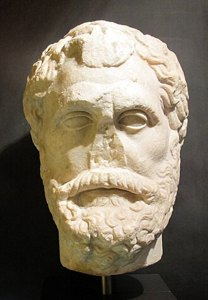
Thales of Miletus c. 624–546 BCEThales of Miletus (c. 624–546 BCE) | طاليس الملطي
Ancient Greek, from Miletus | إغريقي من ميليتوس
Milestone | الإنجاز:c. 600 BCE
Ancient accounts associate him with observations of attraction by rubbed amber. This is an early observation of static electricity, not the invention of a high-voltage power source.
تنسب إليه روايات قديمة ملاحظة جذب الأجسام بالكهرمان المدلوك. هذه بداية وصفية للكهرباء الساكنة، وليست اختراعا لمنبع قدرة عالي التوتر.
High-voltage / transformer link: The historical starting point is electric charge; transformers and power networks came much later.
الصلة بالتوتر العالي والمحولات: تبدأ القصة بالشحنة الكهربائية؛ أما المحولات وشبكات القدرة فجاءت بعد ذلك بقرون.
1544 Born | الميلاد
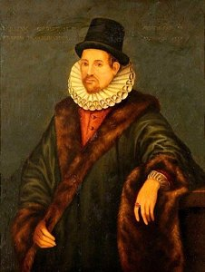
William Gilbert 1544–1603William Gilbert (1544–1603) | وليام غيلبرت
English | إنجليزي
Milestone | الإنجاز:1600
He systematically studied magnetic and electrical phenomena in De Magnete, distinguishing attraction produced by rubbing from magnetic attraction.
درس الظواهر المغناطيسية والكهربائية بصورة منهجية في كتابه «عن المغناطيس»، وميز بين التجاذب الناتج عن الدلك والتجاذب المغناطيسي.
High-voltage / transformer link: Separating electric and magnetic phenomena prepared the way for understanding their later connection in induction.
الصلة بالتوتر العالي والمحولات: مهد التمييز بين الكهرباء والمغناطيسية لفهم ارتباطهما لاحقا في الحث الكهرومغناطيسي.
1602 Born | الميلاد
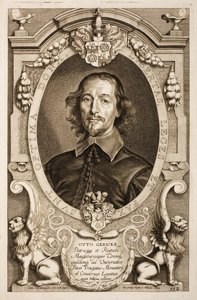
Otto von Guericke 1602–1686Otto von Guericke (1602–1686) | أوتو فون غيريكه
German | ألماني
Milestone | الإنجاز:1663
He developed a friction machine using a rotating sulfur sphere to produce static charge. Such machines made repeated electrical experiments possible.
طور آلة احتكاك تعتمد على كرة كبريت دوارة لتوليد الشحنة الساكنة، ما أتاح تكرار التجارب الكهربائية بصورة أكثر انتظاما.
High-voltage / transformer link: High voltage can be produced by charge separation; it does not necessarily mean high current or high power.
الصلة بالتوتر العالي والمحولات: يمكن توليد توتر مرتفع بفصل الشحنات؛ ولا يعني ارتفاع التوتر بالضرورة ارتفاع التيار أو الاستطاعة.
1692 Born | الميلاد
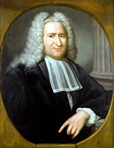
Pieter van Musschenbroek 1692–1761Pieter van Musschenbroek (1692–1761) | بيتر فان موسخنبروك
Dutch | هولندي
Milestone | الإنجاز:1746
His Leiden experiments helped establish the Leyden jar as a device for storing charge. The device is an early capacitor.
أسهمت تجاربه في ليدن في ترسيخ استخدام قارورة ليدن لتخزين الشحنة، وهي نموذج مبكر للمكثف.
High-voltage / transformer link: Stored electric energy later became central to impulse-voltage generators and capacitive test objects.
الصلة بالتوتر العالي والمحولات: أصبح تخزين الطاقة الكهربائية أساسيا لاحقا في مولدات التوتر النبضي وفي تمثيل أجسام الاختبار السعوية.
\[q=CU \qquad W=\frac12 CU^2\]
Unit balance: left = right | تحقق الوحدات: الطرف الأيسر = الطرف الأيمن
Ewald Georg von Kleist (1700–1748) | إيفالد غيورغ فون كلايست
German / Pomeranian | ألماني من بوميرانيا
Milestone | الإنجاز:1745
He independently discovered a method of storing electric charge in a glass vessel in 1745. His experiment preceded the better-known Leiden experiments.
اكتشف بصورة مستقلة طريقة لتخزين الشحنة في وعاء زجاجي عام 1745، قبل تجارب ليدن الأشهر.
High-voltage / transformer link: He appears after Musschenbroek here because he was born later, although his relevant experiment occurred earlier.
الصلة بالتوتر العالي والمحولات: يأتي بعد موسخنبروك هنا لأنه أحدث مولدا، رغم أن تجربته المرتبطة بقارورة ليدن كانت أسبق زمنيا.
1706 Born | الميلاد
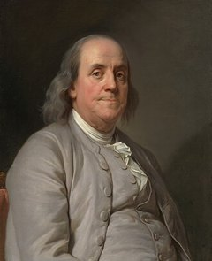
Benjamin Franklin 1706–1790Benjamin Franklin (1706–1790) | بنجامين فرانكلين
American | أمريكي
Milestone | الإنجاز:1752
His research connected lightning with electricity and led to the lightning rod. Atmospheric electricity became a subject for scientific investigation and protection.
ربطت أبحاثه البرق بالكهرباء، وقادت إلى مانعة الصواعق. وأصبحت الكهرباء الجوية مجالا للبحث والحماية الهندسية.
High-voltage / transformer link: Lightning is a natural source of high-voltage surges, explaining why equipment needs insulation coordination and impulse tests.
الصلة بالتوتر العالي والمحولات: يمثل البرق مصدرا طبيعيا للتوترات العالية العابرة، ما يفسر الحاجة إلى تنسيق العزل والاختبارات النبضية.
1736 Born | الميلاد
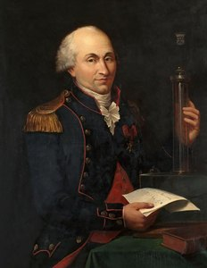
Charles-Augustin de Coulomb 1736–1806Charles-Augustin de Coulomb (1736–1806) | شارل أوغستان دو كولوم
French | فرنسي
Milestone | الإنجاز:1785
He quantified the electrostatic force between charges. Charge, force and electric field could then be related mathematically.
وضع علاقة كمية للقوة الكهربائية بين الشحنات، فأصبح ربط الشحنة والقوة والمجال الكهربائي ممكنا رياضيا.
High-voltage / transformer link: Electric-field calculations explain insulation stress and why electrode shape matters at high voltage. For the displayed force law, the charges are point charges in a homogeneous medium of permittivity \(\varepsilon\).
الصلة بالتوتر العالي والمحولات: تفسر حسابات المجال إجهاد العزل وسبب أهمية شكل الأقطاب في تجهيزات التوتر العالي. تخص علاقة القوة المعروضة شحنات نقطية في وسط متجانس سماحيته \(\varepsilon\).
Alessandro Volta 1745–1827Alessandro Volta (1745–1827) | أليساندرو فولطا
Italian | إيطالي
Milestone | الإنجاز:1800
The voltaic pile provided a sustained source of current, unlike the brief discharges of electrostatic machines.
قدم العمود الفولطي مصدرا مستمرا للتيار، بخلاف التفريغات القصيرة الناتجة عن آلات الكهرباء الساكنة.
High-voltage / transformer link: A steady DC source alone does not continuously transform voltage through an ordinary transformer; a changing magnetic flux is required.
الصلة بالتوتر العالي والمحولات: لا يرفع المحول العادي توتر مصدر مستمر ثابت بصورة مستمرة؛ إذ يحتاج إلى فيض مغناطيسي متغير.
1775 Born | الميلاد
André-Marie Ampère 1775–1836André-Marie Ampère (1775–1836) | أندريه ماري أمبير
French | فرنسي
Milestone | الإنجاز:1820s
He developed the quantitative study of magnetic effects produced by electric currents and the forces between current-carrying conductors.
طور الدراسة الكمية للتأثيرات المغناطيسية للتيارات والقوى بين الموصلات الحاملة للتيار.
High-voltage / transformer link: Transformer windings create magnetomotive force, driving flux through the magnetic core.
الصلة بالتوتر العالي والمحولات: تولد ملفات المحول قوة محركة مغناطيسية تسوق الفيض في القلب المغناطيسي.
\[\mathcal F=NI\]
Unit balance: left = right | تحقق الوحدات: الطرف الأيسر = الطرف الأيمن
\[[\mathcal F]=1\cdot\mathrm A=\mathrm A\]
1777 Born | الميلاد
Hans Christian Ørsted 1777–1851Hans Christian Ørsted (1777–1851) | هانس كريستيان أورستد
Danish | دنماركي
Milestone | الإنجاز:1820
He demonstrated that an electric current deflects a nearby magnetic compass, establishing an experimental link between electricity and magnetism.
بين أن التيار الكهربائي يحرف إبرة بوصلة قريبة، مثبتا تجريبيا الصلة بين الكهرباء والمغناطيسية.
High-voltage / transformer link: Current in the primary winding creates the magnetic effect needed for transformer action.
الصلة بالتوتر العالي والمحولات: يولد التيار في الملف الأولي التأثير المغناطيسي اللازم لعمل المحول.
1789 Born | الميلاد
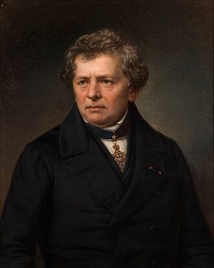
Georg Simon Ohm 1789–1854Georg Simon Ohm (1789–1854) | غيورغ سيمون أوم
German | ألماني
Milestone | الإنجاز:1827
He established the quantitative relation between voltage, current and resistance for ohmic conductors.
وضع العلاقة الكمية بين التوتر والتيار والمقاومة في الموصلات الأومية.
High-voltage / transformer link: Conductor and winding resistance causes voltage drop and contributes to losses in transmission lines and transformers.
الصلة بالتوتر العالي والمحولات: تسبب مقاومة الموصلات والملفات هبوط التوتر وتسهم في ضياعات خطوط النقل والمحولات.
\[U=RI\]
Unit balance: left = right | تحقق الوحدات: الطرف الأيسر = الطرف الأيمن
\[[U]=\mathrm{\Omega\cdot A}=\mathrm V\]
1791 Born | الميلاد
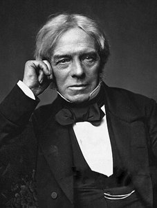
Michael Faraday 1791–1867Michael Faraday (1791–1867) | مايكل فاراداي
British / English | بريطاني / إنجليزي
Milestone | الإنجاز:1831
He discovered electromagnetic induction and used an iron ring with two windings to demonstrate induced voltage when the magnetic state changed.
اكتشف الحث الكهرومغناطيسي، واستخدم حلقة حديدية ذات ملفين لإظهار تولد التوتر عند تغير الحالة المغناطيسية.
High-voltage / transformer link: This is the experimental foundation of the transformer: changing flux induces EMF; steady flux does not.
الصلة بالتوتر العالي والمحولات: هذا هو الأساس التجريبي للمحول: تغير الفيض يولد قوة محركة كهربائية، أما الفيض الثابت فلا يفعل ذلك.
\[e(t)=-N\frac{\mathrm d\Phi(t)}{\mathrm dt}\]
Unit balance: left = right | تحقق الوحدات: الطرف الأيسر = الطرف الأيمن
Joseph Henry 1797–1878Joseph Henry (1797–1878) | جوزيف هنري
American | أمريكي
Milestone | الإنجاز:1830s
He independently investigated electromagnetic induction and made important contributions to self-induction and powerful electromagnets.
بحث الحث الكهرومغناطيسي بصورة مستقلة، وقدم إسهامات مهمة في الحث الذاتي والمغانط الكهربائية.
High-voltage / transformer link: A rapid change of current can produce a large induced voltage, a principle central to induction coils and switching overvoltages.
الصلة بالتوتر العالي والمحولات: يمكن لتغير التيار بسرعة أن يولد توترا محرضا كبيرا؛ وهو مبدأ مهم لملفات الحث والتوترات الزائدة عند الفصل.
\[u_L=L\frac{\mathrm di}{\mathrm dt}\]
Unit balance: left = right | تحقق الوحدات: الطرف الأيسر = الطرف الأيمن
Nicholas Joseph Callan 1799–1864Nicholas Joseph Callan (1799–1864) | نيكولاس جوزيف كالان
Irish | إيرلندي
Milestone | الإنجاز:1836
He developed an early induction coil at Maynooth: a low-voltage supply and interrupted primary current produced high-voltage pulses in a secondary winding.
طور في ماينوث ملف حث مبكرا: يغذي منبع منخفض التوتر الملف الأولي، ويولد قطع تياره نبضات مرتفعة التوتر في الملف الثانوي.
High-voltage / transformer link: It connects the induction principle to a practical laboratory source of high voltage.
الصلة بالتوتر العالي والمحولات: يربط هذا الجهاز مبدأ الحث بمنبع مخبري عملي للتوتر العالي.
1803 Born | الميلاد
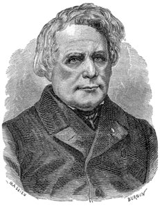
Heinrich Daniel Ruhmkorff 1803–1877Heinrich Daniel Ruhmkorff (1803–1877) | هاينريش دانيال رومكورف
German; worked in Paris | ألماني؛ عمل في باريس
Milestone | الإنجاز:c. 1851
He improved and commercialized induction coils, with carefully insulated secondary windings and interrupted primary excitation.
حسن ملفات الحث ونشر تصنيعها، مستخدما عزل الملف الثانوي وتقطيع تيار الإثارة الأولي لإنتاج توترات مرتفعة.
High-voltage / transformer link: His contribution is development of high-voltage induction apparatus; it should not be confused with inventing every form of power transformer.
الصلة بالتوتر العالي والمحولات: إسهامه هو تطوير أجهزة الحث عالية التوتر، ويجب تمييز ذلك عن اختراع جميع أنواع محولات القدرة.
1804 Born | الميلاد
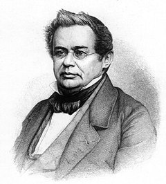
Heinrich Friedrich Emil Lenz 1804–1865Heinrich Friedrich Emil Lenz (1804–1865) | هاينريش فريدريش إميل لينز
Russian, of Baltic German origin; born in present-day Estonia | روسي من أصل ألماني بلطيقي؛ ولد في إستونيا الحالية
Milestone | الإنجاز:1834 / 1842
In 1834 he formulated the rule that the magnetic effect of an induced current opposes the change in linked flux that produces it. He also independently studied resistive heating.
صاغ عام 1834 القاعدة التي تنص على أن الأثر المغناطيسي للتيار المحرض يعارض تغير الفيض الذي ولد هذا التيار. كما درس بصورة مستقلة التسخين الناتج عن مرور التيار في المقاومة.
\[e(t)=-N\frac{\mathrm d\Phi(t)}{\mathrm dt}\]
Unit balance: left = right | تحقق الوحدات: الطرف الأيسر = الطرف الأيمن
High-voltage / transformer link: His law explains the negative sign in the induction law and expresses energy conservation. The opposition is to the change in flux, not necessarily to the flux itself. When the secondary supplies a load, its current produces a demagnetizing magnetomotive force. At approximately fixed applied primary voltage and frequency, the primary draws additional current to balance this effect and keep the main flux nearly unchanged.
الصلة بالتوتر العالي والمحولات: يفسر قانونه إشارة السالب في قانون الحث ويعبر عن حفظ الطاقة. والمعارضة تكون لتغير الفيض، وليس بالضرورة للفيض نفسه. عندما يغذي الملف الثانوي حملا، يولد تياره قوة محركة مغناطيسية معاكسة. وعند ثبات التوتر الأولي والتردد تقريبا يسحب الملف الأولي تيارا إضافيا لموازنة هذا الأثر وإبقاء الفيض الرئيسي شبه ثابت.
\[N_1|I_{1,\mathrm{load}}|\approx N_2|I_2|\]
Unit balance: left = right | تحقق الوحدات: الطرف الأيسر = الطرف الأيمن
The last relation compares the magnitudes of opposing load ampere-turns, neglecting the magnetizing component; current directions depend on the chosen reference and dot convention. Higher secondary power therefore requires higher input power, rather than creating energy.
تقارن العلاقة الأخيرة مقادير أمبير-لفات الحمل المتعاكسة مع إهمال مركبة المغنطة؛ وتتحدد اتجاهات التيارات بحسب المراجع المختارة ونقاط القطبية. لذلك تتطلب زيادة الاستطاعة الثانوية زيادة استطاعة الدخل، ولا تعني توليد طاقة من دون مصدر.
1816 Born | الميلاد
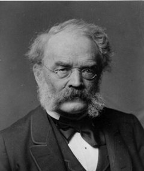
Werner von Siemens 1816–1892Werner von Siemens (1816–1892) | فيرنر فون سيمنس
German | ألماني
Milestone | الإنجاز:1866
He developed the dynamo-electric principle, helping make electrical generation economical and suitable for large-scale applications.
طور مبدأ الدينامو الكهربائي، مسهما في جعل توليد الكهرباء اقتصاديا وملائما للتطبيقات واسعة النطاق.
High-voltage / transformer link: Generation produces electrical energy; transformers then adapt AC voltage for transmission and use. These are distinct engineering functions.
الصلة بالتوتر العالي والمحولات: ينتج التوليد الطاقة الكهربائية، ثم تلائم المحولات توترها المتناوب للنقل والاستخدام؛ وهما وظيفتان هندسيتان مختلفتان.
1818 Born | الميلاد
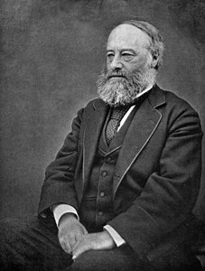
James Prescott Joule 1818–1889James Prescott Joule (1818–1889) | جيمس بريسكوت جول
British / English | بريطاني / إنجليزي
Milestone | الإنجاز:1840s
He quantified the heating produced by electric current in a resistance, linking electrical and thermal energy.
درس كميا التسخين الناتج عن مرور التيار في مقاومة، وربط الطاقة الكهربائية بالطاقة الحرارية.
High-voltage / transformer link: For fixed transferred power, raising voltage reduces current and therefore conductor \(I\)²\(R\) losses. This is the main motivation for high-voltage transmission.
الصلة بالتوتر العالي والمحولات: عند ثبات الاستطاعة المنقولة يخفض رفع التوتر التيار وضياعات \(I\)²\(R\)؛ وهذا دافع أساسي للنقل بالتوتر العالي.
\[P_{\mathrm{heat}}=I^2R \qquad W=I^2Rt\]
Unit balance: left = right | تحقق الوحدات: الطرف الأيسر = الطرف الأيمن
James Clerk Maxwell 1831–1879James Clerk Maxwell (1831–1879) | جيمس كليرك ماكسويل
British / Scottish | بريطاني / اسكتلندي
Milestone | الإنجاز:1860s
He unified electric and magnetic field theory, including the relationship between changing magnetic fields and induced electric fields.
وحد نظرية المجالين الكهربائي والمغناطيسي، بما يشمل ارتباط تغير المجال المغناطيسي بالمجال الكهربائي المحرض.
High-voltage / transformer link: Field theory supports transformer analysis, insulation design and understanding transient electromagnetic phenomena.
الصلة بالتوتر العالي والمحولات: تدعم نظرية المجال تحليل المحولات وتصميم العزل وفهم الظواهر الكهرومغناطيسية العابرة.
c. 1833 Born | الميلاد
John Dixon Gibbs (c. 1833–1912) | جون ديكسون غيبس
British | بريطاني
Milestone | الإنجاز:1882–1884
He helped develop and demonstrate the early AC “secondary generator” used in power-supply experiments. He contributed to the engineering and commercial development of transformer systems.
شارك في تطوير وعرض «المولد الثانوي» المتناوب في تجارب الإمداد الكهربائي، وأسهم في التطوير الهندسي والتجاري لمنظومات المحولات.
High-voltage / transformer link: Transformer development moved from laboratory induction to power distribution. His birth year is approximately 1833 in this ordering.
الصلة بالتوتر العالي والمحولات: انتقل تطوير المحول من الحث المخبري إلى توزيع القدرة. يعتمد ترتيب هذه البطاقة سنة ميلاد تقريبية هي 1833.
He worked on long-distance DC transmission, including the Miesbach–Munich demonstration over about 57 km at approximately 2 \(\mathrm{kV}\).
عمل في نقل الطاقة بالمستمر لمسافات بعيدة، ومن ذلك تجربة ميسباخ–ميونخ لمسافة تقارب 57 km وبتوتر نحو 2 \(\mathrm{kV}\).
High-voltage / transformer link: The experiment demonstrated the value of elevated voltage, while ordinary transformers cannot directly change a steady DC voltage.
الصلة بالتوتر العالي والمحولات: أظهرت التجربة أهمية رفع توتر النقل، مع أن المحولات العادية لا تحول التوتر المستمر الثابت مباشرة.
1846 Born | الميلاد
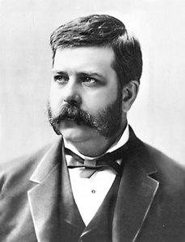
George Westinghouse 1846–1914George Westinghouse (1846–1914) | جورج وستنغهاوس
American | أمريكي
Milestone | الإنجاز:1880s–1890s
He supported the industrial development and deployment of AC generation, transformers and transmission systems.
دعم التطوير الصناعي ونشر منظومات التوليد المتناوب والمحولات ونقل الطاقة.
High-voltage / transformer link: A useful transformer must be manufacturable and integrated with generators, lines, protection and loads.
الصلة بالتوتر العالي والمحولات: يجب أن يكون المحول قابلا للتصنيع وأن يتكامل مع المولدات والخطوط والحماية والأحمال.
With the previously introduced Gibbs, he developed early transformer systems and demonstrated AC power transmission, including the 1884 Turin exhibition.
طور مع غيبس الذي سبق التعريف به منظومات محولات مبكرة، وعرض نقل الطاقة المتناوبة، ومن ذلك معرض تورينو عام 1884.
High-voltage / transformer link: Their early designs helped expose the importance of magnetic coupling and stable secondary voltage as loads change.
الصلة بالتوتر العالي والمحولات: أبرزت تصميماتهما المبكرة أهمية الاقتران المغناطيسي واستقرار التوتر الثانوي مع تغير الأحمال.
At Ganz, he co-developed the closed-core transformer system and parallel AC distribution, enabling more independent operation of consumer loads.
شارك في شركة غانز في تطوير منظومة المحولات ذات القلب المغلق والتوزيع المتناوب على التوازي، بما أتاح استقلالية أكبر في تشغيل الأحمال.
High-voltage / transformer link: Parallel connection and suitable transformer ratios were central to practical constant-voltage distribution.
كان الربط على التوازي واختيار نسب تحويل مناسبة من العوامل الأساسية في التوزيع العملي بتوتر ثابت تقريبا.
1854 Born | الميلاد
Miksa \(D\)éri 1854–1938Miksa \(D\)éri (1854–1938) | ميكشا ديري
Hungarian | مجري
Milestone | الإنجاز:1885
He co-developed and experimentally validated the Ganz closed-core transformer and parallel distribution system.
شارك في تطوير منظومة غانز للمحولات ذات القلب المغلق والتوزيع على التوازي والتحقق التجريبي منها.
High-voltage / transformer link: Improved coupling and reduced leakage made voltage transformation more effective for power networks.
الصلة بالتوتر العالي والمحولات: حسن الاقتران المغناطيسي وخفض التسريب فاعلية تحويل التوتر في شبكات القدرة.
1855 Born | الميلاد
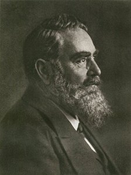
Oskar von Miller 1855–1934Oskar von Miller (1855–1934) | أوسكار فون ميلر
German | ألماني
Milestone | الإنجاز:1882 / 1891
He organized major electricity exhibitions and long-distance transmission demonstrations, including Miesbach–Munich and Lauffen–Frankfurt.
نظم معارض كهربائية وتجارب نقل بعيدة مهمة، ومنها ميسباخ–ميونخ ولاوفن–فرانكفورت.
High-voltage / transformer link: The 1891 demonstration showed the complete chain: generation, voltage step-up, transmission, step-down and useful loads.
الصلة بالتوتر العالي والمحولات: أظهر عرض 1891 السلسلة الكاملة: التوليد ورفع التوتر والنقل وخفض التوتر ثم تغذية أحمال نافعة.
1856 Born | الميلاد
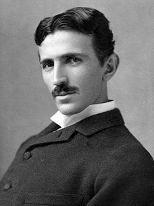
Nikola Tesla 1856–1943Nikola Tesla (1856–1943) | نيكولا تسلا
Serbian origin; American citizen | من أصل صربي؛ أمريكي الجنسية
Milestone | الإنجاز:1888 / 1891
He developed polyphase AC technologies and the high-frequency resonant transformer known as the Tesla coil.
طور تقنيات التيار المتناوب متعدد الأطوار والمحول الرنيني عالي التردد المعروف بملف تسلا.
High-voltage / transformer link: His work connects AC systems to high-frequency high-voltage generation, a separate topic from ordinary power-frequency transformers. The displayed frequency is the ideal LC resonance frequency.
الصلة بالتوتر العالي والمحولات: يربط عمله الأنظمة المتناوبة بتوليد التوتر العالي بترددات مرتفعة، وهو موضوع يختلف عن محولات تردد القدرة العادية. التردد المعروض هو تردد الرنين المثالي لدارة LC.
\[f_0=\frac{1}{2\pi\sqrt{LC}}\]
Unit balance: left = right | تحقق الوحدات: الطرف الأيسر = الطرف الأيمن
William Stanley Jr. 1858–1916William Stanley Jr. (1858–1916) | وليام ستانلي الابن
American | أمريكي
Milestone | الإنجاز:1886
He refined practical transformer construction and demonstrated transformer-based AC supply at Great Barrington.
حسن البنية العملية للمحول، وعرض منظومة إمداد متناوب تعتمد على المحولات في غريت بارينغتون.
High-voltage / transformer link: The practical principle is to raise voltage for transmission and lower it near consumers, rather than distribute all power at one low voltage.
الصلة بالتوتر العالي والمحولات: المبدأ العملي هو رفع التوتر للنقل ثم خفضه قرب المستهلكين، بدلا من توزيع الاستطاعة كلها عند توتر منخفض واحد.
\[\frac{U_2}{U_1}\approx\frac{N_2}{N_1}\]
Unit balance: left = right | تحقق الوحدات: الطرف الأيسر = الطرف الأيمن
Ottó Bláthy 1860–1939Ottó Bláthy (1860–1939) | أوتو بلاتي
Hungarian | مجري
Milestone | الإنجاز:1885
He co-developed the Ganz closed-core transformer system. With Zipernowsky and \(D\)éri, already introduced above, he forms the team commonly abbreviated ZBD.
شارك في تطوير منظومة غانز للمحول ذي القلب المغلق. ويشكل مع زيبرنوفسكي وديري، اللذين سبق التعريف بهما، الفريق المعروف اختصارا باسم ZBD.
High-voltage / transformer link: This was a decisive stage in the practical modern transformer, not the first observation of induction or the only transformer invention.
الصلة بالتوتر العالي والمحولات: يمثل هذا مرحلة حاسمة في المحول العملي الحديث، مع التمييز بينه وبين أول اكتشاف للحث أو بقية أنواع المحولات.
Russian-born, Polish-Russian origins; later Swiss; worked in Germany | روسي المولد من أصول بولندية وروسية؛ سويسري لاحقا؛ عمل في ألمانيا
Milestone | الإنجاز:1889–1891
At AEG in Germany, he developed three-phase transformer arrangements and other three-phase equipment that contributed to the Lauffen–Frankfurt system.
طور في شركة AEG بألمانيا ترتيبات المحولات ثلاثية الطور وتجهيزات أخرى للتيار ثلاثي الطور، أسهمت في منظومة لاوفن–فرانكفورت.
High-voltage / transformer link: His development connects the transformer to three-phase high-voltage networks. Workplace, birthplace and nationality are identified separately.
الصلة بالتوتر العالي والمحولات: يربط تطويره المحول بشبكات التوتر العالي ثلاثية الطور. وتوضح البطاقة الفرق بين مكان العمل والمولد والجنسية.
Unit balance: left = right | تحقق الوحدات: الطرف الأيسر = الطرف الأيمن
\[[P]=\mathrm{V\cdot A}=\mathrm W\]
1863 Born | الميلاد
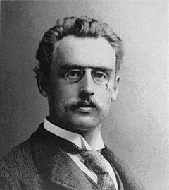
Charles Eugene Lancelot Brown 1863–1924Charles Eugene Lancelot Brown (1863–1924) | تشارلز يوجين لانسلوت براون
British citizen, born and active in Switzerland | بريطاني الجنسية، ولد وعمل في سويسرا
Milestone | الإنجاز:1891
At Oerlikon, he contributed major generating and transformer equipment to the Lauffen–Frankfurt transmission demonstration and co-founded BBC.
أسهم في أورليكون في تجهيزات التوليد والمحولات لتجربة لاوفن–فرانكفورت، وشارك في تأسيس BBC.
High-voltage / transformer link: Transformer, generator and insulation design must work together. The Swiss birthplace and career should not be confused with his documented British citizenship.
الصلة بالتوتر العالي والمحولات: يجب أن تتكامل تصاميم المحول والمولد والعزل. ولا يخلط بين مولده وعمله في سويسرا وبين جنسيته البريطانية الموثقة.
1864 Born | الميلاد
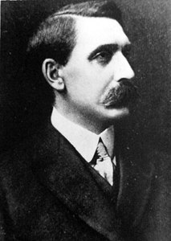
Sebastian Ziani de Ferranti 1864–1930Sebastian Ziani de Ferranti (1864–1930) | سيباستيان زياني دي فيرانتي
British | بريطاني
Milestone | الإنجاز:1889–1891
He developed high-voltage AC generation and distribution equipment for Deptford, including transformers and cables associated with a 10 \(\mathrm{kV}\) supply system.
طور تجهيزات توليد وتوزيع متناوب مرتفع التوتر لمشروع دبتفورد، بما يشمل المحولات والكابلات المرتبطة بمنظومة تغذية بمستوى 10 \(\mathrm{kV}\).
High-voltage / transformer link: A remote generating station becomes useful only if transformers, cables and substations reliably deliver power to consumers.
الصلة بالتوتر العالي والمحولات: لا تكفي المحطة البعيدة وحدها؛ بل يجب أن توصل المحولات والكابلات ومحطات التحويل الطاقة إلى المستهلكين بموثوقية.
He advanced the analysis of AC circuits, magnetic hysteresis and transient phenomena, contributing to practical transformer and power-system design.
طور تحليل الدارات المتناوبة والهسترة المغناطيسية والظواهر العابرة، مسهما في التصميم العملي للمحولات وأنظمة القدرة.
High-voltage / transformer link: Transformer cores have magnetic losses; voltage transformation must be evaluated together with efficiency, heating and transient stresses.
الصلة بالتوتر العالي والمحولات: لقلب المحول ضياعات مغناطيسية؛ لذا تدرس عملية تحويل التوتر مع المردود والتسخين والإجهادات العابرة.
1893 Born | الميلاد
Erwin Otto Marx (1893–1980) | إرفين أوتو ماركس
German | ألماني
Milestone | الإنجاز:1924
He described an impulse generator that charges capacitors in parallel and reconnects them in series to obtain a high-voltage pulse.
وصف مولد نبضات يشحن المكثفات على التوازي ثم يعيد توصيلها على التسلسل للحصول على نبضة عالية التوتر.
High-voltage / transformer link: Impulse generators test insulation under fast surges. For n ideal stages charged to Uc, the theoretical peak is approximately nUc.
الصلة بالتوتر العالي والمحولات: تختبر مولدات النبضات العزل تحت التوترات السريعة. ولعدد n من المراحل المثالية المشحونة إلى Uc تكون القمة النظرية نحو nUc.
John Douglas Cockcroft 1897–1967John Douglas Cockcroft (1897–1967) | جون دوغلاس كوكروفت
British | بريطاني
Milestone | الإنجاز:1932
He co-developed a rectifier-capacitor voltage multiplier used for accelerating particles, demonstrating another route to high DC voltage.
شارك في تطوير مضاعف توتر يعتمد على المقومات والمكثفات لتسريع الجسيمات، موضحا طريقا آخر لتوليد التوتر العالي المستمر.
High-voltage / transformer link: High AC voltage from a transformer can be rectified and multiplied. This prepares the course topic of multistage DC generators.
الصلة بالتوتر العالي والمحولات: يمكن تقويم التوتر المتناوب العالي الناتج عن المحول ومضاعفته؛ وهذا يمهد لمولدات المستمر متعددة المراحل.
1899 Born | الميلاد
Bernhard Jansen (1899–1958) | برنهارد يانسن
German | ألماني
Milestone | الإنجاز:1926
He filed the foundational patent for a resistor-type on-load tap changer, allowing transformer ratios to be changed while supplying a load.
قدم براءة أساسية لمبدل المآخذ المقاومي تحت الحمل، بما أتاح تغيير نسبة تحويل المحول أثناء تغذية الحمل.
High-voltage / transformer link: Tap changing regulates network voltage without interrupting supply; selecting a higher or lower voltage is also an operational task.
الصلة بالتوتر العالي والمحولات: ينظم تبديل المآخذ توتر الشبكة دون قطع التغذية؛ فاختيار التوتر المناسب مسألة تشغيلية أيضا.
1901 Born | الميلاد
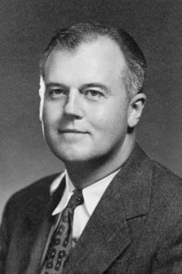
Robert \(J\). Van de Graaff 1901–1967Robert \(J\). Van de Graaff (1901–1967) | روبرت فان دوغراف
American | أمريكي
Milestone | الإنجاز:1929
He developed a belt-driven electrostatic generator that transports charge to a high-voltage terminal.
طور مولدا كهربائيا ساكنا ينقل الشحنة بحزام إلى قطب مرتفع التوتر.
High-voltage / transformer link: It produces high DC voltage through mechanical charge transport rather than transformer action, illustrating the diversity of high-voltage sources.
الصلة بالتوتر العالي والمحولات: ينتج التوتر المستمر العالي بنقل الشحنة ميكانيكيا، وليس بعمل المحول؛ ما يوضح تنوع منابع التوتر العالي.
\[U=\frac qC\]
Unit balance: left = right | تحقق الوحدات: الطرف الأيسر = الطرف الأيمن
Ernest Thomas Sinton Walton 1903–1995Ernest Thomas Sinton Walton (1903–1995) | إرنست توماس سينتون والتون
Irish | إيرلندي
Milestone | الإنجاز:1932
With Cockcroft, already introduced above, he developed and operated the voltage-multiplier accelerator used in the 1932 nuclear experiments.
طور مع كوكروفت، الذي سبق التعريف به، مسرع الجسيمات المعتمد على مضاعف التوتر وشغلاه في تجارب عام 1932.
High-voltage / transformer link: Diodes and capacitors form cascaded charging stages; output voltage and ripple depend on stage number, load and capacitance.
الصلة بالتوتر العالي والمحولات: تشكل المقومات والمكثفات مراحل شحن متتابعة؛ ويتأثر توتر الخرج وتموجه بعدد المراحل والحمل والسعة.
1904 Born | الميلاد
Uno Lamm (1904–1989) | أونو لام
Swedish | سويدي
Milestone | الإنجاز:1929–1954
At ASEA, he led pioneering high-voltage DC conversion work that contributed to the Gotland link commissioned in 1954 at 100 \(\mathrm{kV}\) and 20 \(\mathrm{MW}\).
قاد في ASEA عملا رائدا في تحويل الطاقة بالمستمر العالي، أسهم في رابط غوتلاند الذي دخل الخدمة عام 1954 بتوتر 100 \(\mathrm{kV}\) واستطاعة 20 \(\mathrm{MW}\).
High-voltage / transformer link: An HVDC station combines converter transformers with rectifiers or inverters: transformers adapt AC voltage, while converters perform AC/DC conversion.
الصلة بالتوتر العالي والمحولات: تجمع محطة HVDC محولات الربط مع المقومات أو العواكس: تلائم المحولات التوتر المتناوب، وتنجز المبدلات التحويل بين AC وDC.
Unit balance: left = right | تحقق الوحدات: الطرف الأيسر = الطرف الأيمن
\[[P_{\mathrm{DC}}]=\mathrm{V\cdot A}=\mathrm W\]
From individual contributions to modern systems | من الإسهامات الفردية إلى المنظومات الحديثة
The biography order above follows birth years. The following engineering milestones follow their actual event dates, so the two orders should not be confused.
يتبع ترتيب العلماء أعلاه سنوات الميلاد. أما المحطات الهندسية التالية فمرتبة بحسب تواريخ حدوثها، ولذلك يجب عدم الخلط بين الترتيبين.
Year | السنة
Milestone | المحطة
Engineering lesson | الدلالة الهندسية
1831
Induction ring | حلقة الحث
Changing flux induces voltage. | تغير الفيض يولد التوتر.
1882
Miesbach–Munich, ≈57 km, ≈2 \(\mathrm{kV}\) DC | ميسباخ–ميونخ
Early long-distance DC transmission. | تجربة مبكرة للنقل المستمر البعيد.
1885–1886
Practical transformer systems | منظومات المحولات العملية
Closed magnetic circuits, parallel supply and practical manufacture. | دارة مغناطيسية مغلقة وربط على التوازي وتصنيع عملي.
1891
Lauffen–Frankfurt, ≈175–176 km, ≈15 \(\mathrm{kV}\) three-phase demonstration | لاوفن–فرانكفورت
±1100 \(\mathrm{kV}\) is pole-to-ground; pole-to-pole is 2200 \(\mathrm{kV}\). | التوتر ±1100 \(\mathrm{kV}\) بالنسبة إلى الأرض، وبين القطبين 2200 \(\mathrm{kV}\).
Large international teams develop complete systems; there is no single inventor for every modern technology. | تطور فرق دولية كبيرة منظومات متكاملة، ولا تنسب كل التقنيات الحديثة إلى مخترع واحد.
Three distinct functions: a generator converts mechanical energy into electrical energy; a transformer adapts AC voltage and current through magnetic induction; a converter changes between AC and DC. A transformer does not create energy and does not continuously transform steady DC on its own.
ثلاث وظائف مختلفة: يحول المولد الطاقة الميكانيكية إلى كهربائية؛ ويلائم المحول التوتر والتيار المتناوبين بالحث المغناطيسي؛ ويحول المبدل بين AC وDC. لا يخلق المحول الطاقة، ولا يحول توتر DC الثابت بصورة مستمرة بمفرده.
Higher voltage allows a given power to be transferred at lower current. For a balanced three-phase system with sinusoidal voltages and currents, active power is:
نرفع التوتر لنقل استطاعة محددة بتيار أصغر. في شبكة ثلاثية الطور متوازنة ذات توتر وتيار جيبيين، تعطى الاستطاعة الفعالة بالعلاقة التالية:
Symbols:\(P\) in watts; \(U_{L}\) is line-to-line RMS voltage in volts; \(I_{L}\) is RMS line current in amperes; \(\cos\varphi\) is the power factor. With resistance \(R\) per phase conductor:
الرموز:\(P\) بالواط؛ \(U_{L}\) توتر الخط بين طورين بالفولت؛ \(I_{L}\) تيار الخط بالأمبير؛ \(\cos\varphi\) معامل الاستطاعة. إذا كانت مقاومة كل موصل طور \(R\):
At fixed \(P\), \(R\) and \(\cos\varphi\), conductor losses vary inversely with voltage squared. This model excludes transformer and corona losses and changes in conductor resistance with temperature.
عند تثبيت \(P\) و\(R\) و\(\cos\varphi\)، تتناسب الضياعات عكسيا مع مربع التوتر. هذه ضياعات الموصلات فقط؛ النموذج لا يضم ضياعات المحولات والكورونا ولا تغير مقاومة الموصل مع حرارته.
Example 1: transferring 1 \(\mathrm{MW}\)
Assume \(P\) = 1 \(\mathrm{MW}\), \(\cos\varphi\) = 1 and \(R\) = 2 Ω per conductor. These inputs remain fixed for this educational comparison.
مثال 1: نقل 1 \(\mathrm{MW}\)
نفرض \(P\) = 1 \(\mathrm{MW}\)، و\(\cos\varphi\) = 1، ومقاومة كل موصل \(R\) = 2 Ω. نثبت هذه المعطيات للمقارنة التعليمية.
الكمية | Quantity
10 \(\mathrm{kV}\)
100 \(\mathrm{kV}\)
تيار الخط | Line current
57.74 A
5.774 A
ضياعات الموصلات | Conductor losses
20 \(\mathrm{kW}\)
0.20 \(\mathrm{kW}\)
الضياعات / الاستطاعة المنقولة | Loss / transferred power
2%
0.02%
Result: A tenfold voltage increase reduces current tenfold and conductor losses a hundredfold under the stated assumptions.
النتيجة: رفع التوتر 10 مرات يخفض التيار 10 مرات والضياعات 100 مرة ضمن الفرضيات المحددة.
Voltage, electric field and insulation | التوتر والمجال والعزل
Lower current is beneficial, but higher voltage increases insulation, clearance and field-control requirements. Voltage is a potential difference, whereas the field describes its spatial variation:
خفض التيار فائدة، لكن رفع التوتر يزيد متطلبات العزل والمسافات والتحكم بالمجال. التوتر فرق في الكمون، أما المجال فيصف تغير الكمون مكانيا:
\[\mathbf E=-\nabla V \qquad |\mathbf E|\approx\frac Ud\]
Unit balance: left = right | تحقق الوحدات: الطرف الأيسر = الطرف الأيمن
\(U\)/\(d\) approximates the field magnitude between parallel plates when the field is nearly uniform and edge effects are neglected. It does not determine peak field near a sharp tip or cylindrical conductor.
العلاقة \(U\)/\(d\) تقريب لمقدار المجال بين لوحين متوازيين عندما يكون المجال منتظما تقريبا ونهمل تأثير الحواف. لا تعطي أكبر مجال قرب طرف حاد أو موصل أسطواني.
Example 2: With \(U\) = 20 \(\mathrm{kV}\) and \(d\) = 10 \(\mathrm{mm}\), \(E\) ≈ 2 \(\mathrm{kV}\)/\(\mathrm{mm}\). This is a field calculation only; insulation withstand also depends on the medium, geometry, conditions and voltage waveform.
مثال 2: إذا كان \(U\) = 20 \(\mathrm{kV}\) و\(d\) = 10 \(\mathrm{mm}\)، فإن \(E\) ≈ 2 \(\mathrm{kV}\)/\(\mathrm{mm}\). النتيجة حساب مجال فقط؛ تحديد تحمل العزل يتطلب معرفة الوسط والشكل والظروف وشكل التوتر.
Electrical breakdown: loss of insulating capability under electrical stress. Corona: a localized partial discharge in a gas near a high-field conductor, without necessarily bridging the entire gap.
الانهيار الكهربائي: فقدان العازل لقدرته على العزل تحت إجهاد معين. الكورونا: تفريغ جزئي موضعي في الغاز قرب موصل مرتفع المجال، ولا تعني بالضرورة انهيار كامل الفجوة.
Voltage waveforms, RMS and peak values | أشكال التوتر والقيمة الفعالة والعظمى
Operating voltage: the voltage at which equipment operates in service. Test voltage: a voltage applied to verify a specified insulation property; its level, waveform and duration depend on the equipment, test and applicable standard.
توتر التشغيل: التوتر الذي تعمل عنده المعدة في الخدمة. توتر الاختبار: توتر يطبق للتحقق من خاصية محددة للعزل؛ مستواه وشكله ومدته تتبع المعدة ونوع الاختبار والمواصفة المناسبة.
النوع | Type
الوصف | Description
متناوب | AC
Periodically changes polarity; we begin with a sine wave.
يتغير دوريا ويبدل القطبية؛ نبدأ بالموجة الجيبية.
مستمر | DC
Constant polarity; ripple may be present.
ثابت القطبية، وقد يحتوي على تموج.
نبضي | Impulse
A rapid rise followed by a decay; specified by peak and time parameters.
ارتفاع سريع يتبعه تناقص؛ يصف بالقمة والمعلمات الزمنية.
u(t) is the instantaneous value; \(\widehat U\) is the peak; \(U_{\mathrm{rms}}\) is the RMS value; f is frequency in hertz; \(T\) is period in seconds. The \(\sqrt2\) relation applies to a sine wave.
u(t) قيمة لحظية؛ \(\widehat U\) قيمة عظمى؛ \(U_{\mathrm{rms}}\) قيمة فعالة؛ f التردد بالهرتز؛ \(T\) الدور بالثانية. علاقة \(\sqrt2\) تخص الموجة الجيبية.
Example 3: For \(U_{\mathrm{rms}}\) = 100 \(\mathrm{kV}\) and \(f\) = 50 \(\mathrm{Hz}\), \(\widehat U\) ≈ 141.4 \(\mathrm{kV}\) and \(T\) = 20 \(\mathrm{ms}\). Always identify RMS versus peak and line-to-line versus line-to-ground voltage.
مثال 3: عند \(U_{\mathrm{rms}}\) = 100 \(\mathrm{kV}\) و\(f\) = 50 \(\mathrm{Hz}\): القمة \(\widehat U\) ≈ 141.4 \(\mathrm{kV}\)، والدور \(T\) = 20 \(\mathrm{ms}\). يجب دائما بيان هل التوتر فعال أم أعظمي، وبين طورين أم بالنسبة إلى الأرض.
Principles of high AC voltage generation | مبدأ توليد التوتر العالي المتناوب
With a generator: rotation of a winding or magnetic field produces voltage through changing flux. Insulation and construction constrain directly generated voltage. With a transformer: an existing AC voltage is stepped up to the required test level.
بالمولد: يولد دوران الملف أو المجال توترا نتيجة تغير الفيض. تقيد زيادة التوتر مباشرة في المولد اعتبارات العزل والبنية. بالمحول: نرفع توترا متناوبا موجودا إلى مستوى الاختبار المطلوب.
\[e(t)=-N\frac{\mathrm d\Phi(t)}{\mathrm dt}\]
Unit balance: left = right | تحقق الوحدات: الطرف الأيسر = الطرف الأيمن
Lenz’s law and the minus sign: The induced effect opposes the change that produces it. In a loaded transformer, the primary supply provides the extra energy delivered to the secondary; the transformer does not create energy.
قانون لينز وإشارة السالب: يعارض الأثر المحرض التغير الذي يولده. وفي المحول المحمل يقدم منبع التغذية الأولي الطاقة الإضافية المسلمة إلى الثانوي؛ فالمحول لا يخلق الطاقة.
For sinusoidal magnetic flux, the RMS induced electromotive force in a winding is approximately:
إذا كان الفيض جيبيا، فإن القيمة الفعالة للقوة المحركة الكهربائية المحرضة في الملف تعطى تقريبا بالعلاقة:
\[E_{\mathrm{rms}}\approx4.44\,fN\Phi_{\max}\]
Unit balance: left = right | تحقق الوحدات: الطرف الأيسر = الطرف الأيمن
\(N\) is the number of turns and \(\Phi_{\mathrm{max}}\) is peak flux in webers. Internal voltage drops are neglected when induced EMF is equated with terminal voltage.
\(N\) عدد اللفات، و\(\Phi_{\mathrm{max}}\) الفيض الأعظمي بالويبر. نهمل هبوط التوتر الداخلي عند مساواة القوة المحركة الكهربائية بتوتر الأطراف.
These are ideal-transformer relations: stepping voltage up steps current down at the same apparent power. Real test transformers require insulation, stray capacitance, leakage and voltage-regulation analysis, which we will develop later.
هذه علاقات المحول المثالي؛ ارتفاع التوتر يقابله انخفاض التيار لنفس الاستطاعة الظاهرية. محول الاختبار الحقيقي يحتاج إلى دراسة العزل والسعات الطفيلية والتسريب وتنظيم التوتر، وهي موضوعات سنوسعها لاحقا.
This is a functional diagram, not a laboratory wiring plan. It shows the supply, voltage regulation, test transformer and test object, together with measurement, protection and earthing.
المخطط يوضح تسلسل الوظائف فقط، ولا يمثل مخطط توصيل مخبري تنفيذي. المكونات: التغذية، تنظيم التوتر، محول الاختبار، جسم الاختبار، مع القياس والحماية والتأريض.
Example 4: turns ratio
To obtain 100 \(\mathrm{kV}\) RMS from 200 \(V\) RMS with an ideal transformer, \(a\) = 100000/200 = 500. If \(N_{1}\) = 200 turns, \(N_{2}\) = 100000 turns. This is an ideal-model result, not a manufacturing design.
مثال 4: نسبة اللفات
نريد 100 \(\mathrm{kV}\) RMS من تغذية 200 \(V\) RMS بمحول مثالي. إذن \(a\) = 100000/200 = 500. إذا كان \(N_{1}\) = 200 لفة، فإن \(N_{2}\) = 100000 لفة. هذه نتيجة نموذج مثالي وليست تصميما تصنيعيا للمحول.
The capacitive load of a test system | الحمل السعوي لمنظومة الاختبار
Many insulation test objects can initially be represented by a capacitance between a high-voltage conductor and earth, or between two conductors. Charging current therefore flows even when dielectric losses are neglected.
يمكن تمثيل كثير من أجسام اختبار العزل، في تقريب أولي، بسعة بين موصل مرتفع التوتر والأرض أو بين موصلين. لذلك يمر تيار شحن حتى إذا أهملنا ضياعات العزل.
\(C\) is in farads, f in hertz, \(U\) in volts, \(I\) in amperes and |\(Q_{C}\)| in \(\mathrm{var}\). Ideal capacitor current leads its voltage by 90°. We use reactive-power magnitude; under the usual load convention, \(Q_{C}\) is negative.
For the ideal capacitive model, \(P\) = 0 and \(S\) = |\(Q_{C}\)| ≈ 3.14 \(\mathrm{kVA}\). Doubling voltage doubles current and quadruples reactive power. Actual equipment selection also includes system losses, additional capacitances, duty and protection requirements.
في النموذج السعوي المثالي \(P\) = 0، و\(S\) = |\(Q_{C}\)| ≈ 3.14 \(\mathrm{kVA}\). عند مضاعفة التوتر يتضاعف التيار وتزداد الاستطاعة الردية 4 مرات. اختيار الجهاز الفعلي يضيف ضياعات المنظومة وسعاتها ومتطلبات الخدمة والحماية.
Worked examples: units in substitution | وحدات التعويض في الأمثلة
\(S\) is apparent power \([\mathrm{VA}]\). For an ideal capacitor, \(S\) and |\(Q_{C}\)| have equal magnitudes; their unit names remain \(\mathrm{VA}\) and \(\mathrm{var}\) respectively. Numerical values in the examples agree with the stated assumptions and rounding.
\(S\) هي الاستطاعة الظاهرية \([\mathrm{VA}]\). في المكثف المثالي يتساوى مقدارا \(S\) و|\(Q_{C}\)|، مع بقاء وحدة الأولى \(\mathrm{VA}\) ووحدة الثانية \(\mathrm{var}\). تتفق القيم العددية للأمثلة مع الفرضيات والتقريب المعتمد. نسبة الضياعات بلا بعد، وتضرب في 100 لعرضها بالمئة.
Equation sheet and next steps | ورقة المعادلات وخريطة المتابعة
Next step: We will progressively develop real test-transformer construction, equivalent circuits, loaded behavior and harmonics, followed by test systems and applications.
الخطوة التالية: نتوسع تدريجيا في بنية محول الاختبار الحقيقي ودارته المكافئة وسلوكه تحت التحميل وتأثير التوافقيات، ثم أنظمة الاختبار وتطبيقاتها.
Self-assessment quizzes | اختبر نفسك
10 questions, each with one answer. Select your responses and choose “Check answers”. You can retry. The PDF includes all questions followed by an explained answer key.
10 أسئلة، لكل سؤال إجابة واحدة. اختر إجاباتك ثم اضغط «تصحيح الاختبار». يمكنك إعادة المحاولة. في ملف PDF تظهر الأسئلة ويتبعها مفتاح الإجابات مع الشرح.
مفتاح الإجابات مع الشرح | Explained answer key
Current halves, so \(I\)²\(R\) conductor losses become one quarter.
C. التيار ينخفض إلى النصف؛ لذلك تصبح ضياعات \(I\)²\(R\) ربع قيمتها.
Changing flux induces voltage: \(e\) = −\(N\)\(d\)Φ/dt, the basis of transformer operation.
A. تغير الفيض يولد توترا: \(e\) = −\(N\)\(d\)Φ/dt؛ وهذه قاعدة عمل المحول.
The demonstration established the feasibility of long-distance three-phase AC transmission.
B. برهنت التجربة على جدوى النقل المتناوب ثلاثي الطور لمسافات بعيدة.
For a sine wave, peak = \(\sqrt2\) × 100 ≈ 141.4 \(\mathrm{kV}\).
D. القيمة العظمى = \(\sqrt2\) × 100 = 141.4 \(\mathrm{kV}\) تقريبا، للموجة الجيبية.